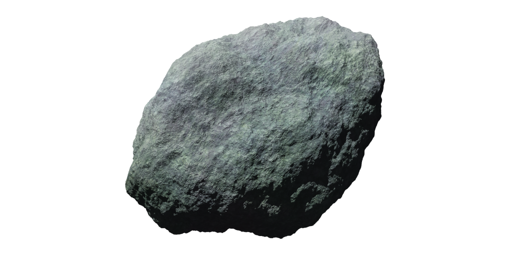

What the Asteroid Belt is for the inner planets, the Kuiper Belt is for the outer ones. It is the limit of the Solar System and a huge
band of icy, comet-like objects. They are not especially resource-rich, but it’s all you’ve got before the incomprehensible void ahead.
Travel beyond this region is impossible.
Contains:
*
Pluto
* Plus near-infinite minors
Distance: 39.5 AU ± 9.0
Resources:
* Minerals
Dangers:
* Low gravity
* No atmosphere
* No gravity
* Extreme cold
* Navigation
Sol KB - Outer Boundary
Kuiper Belt